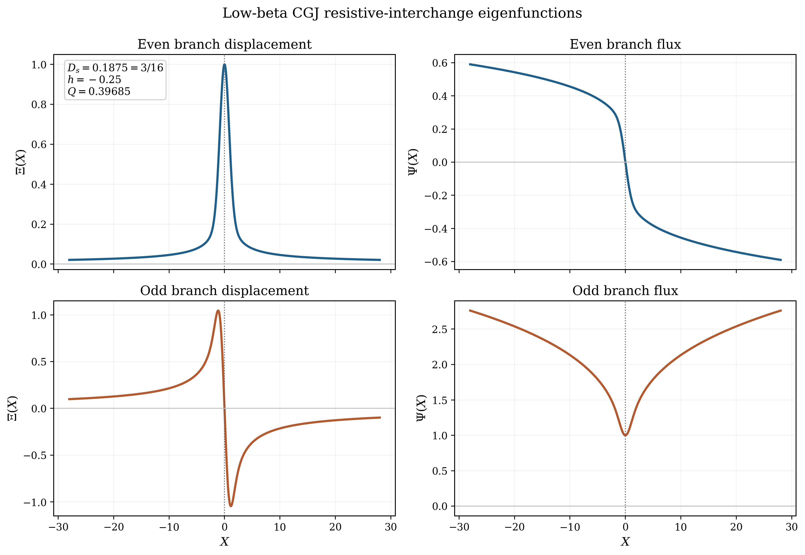
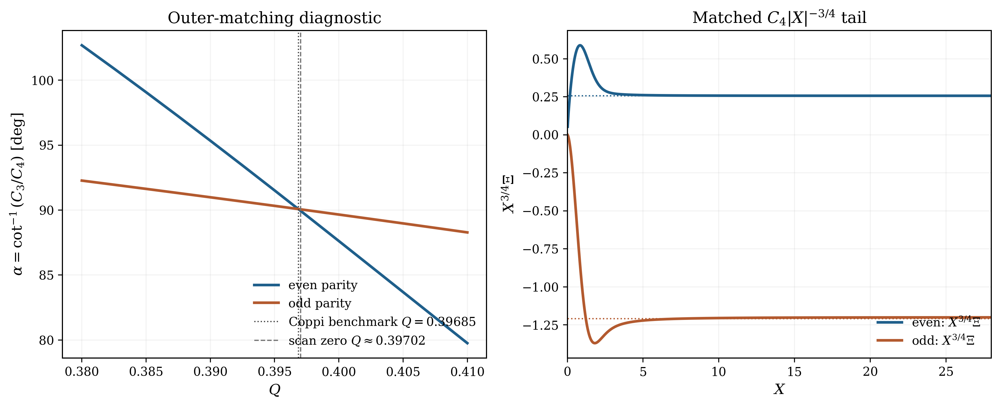
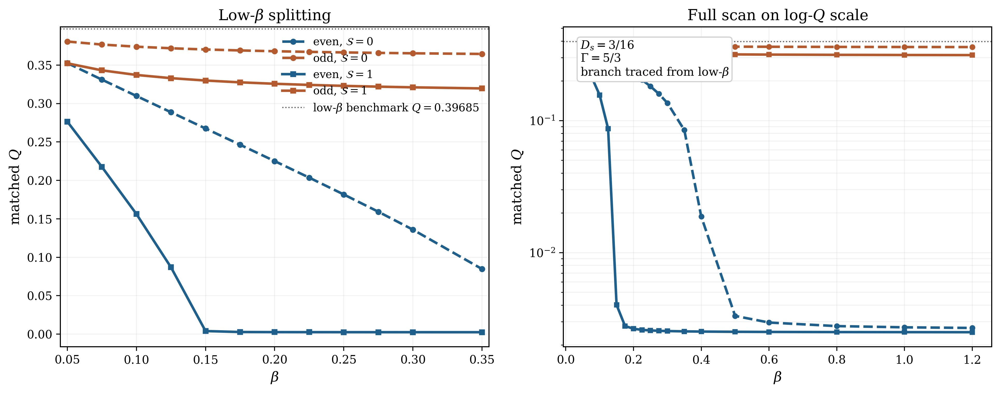

Resistive interchange is the natural bridge between the local buoyancy arguments of Suydam and the reconnection physics of the tearing lecture. The regime we want to isolate is deliberately subtle: the plasma is tearing stable in the outer-region sense, so that the classical magnetic matching parameter satisfies \(\Delta '<0\), and it is also Suydam stable, so that the local ideal singularity is below threshold. Thus neither ordinary FKR tearing nor ideal interchange is allowed to explain the mode.
That is exactly why the Coppi–Greene–Johnson problem is so useful. Once the ideal Suydam problem is stable, the outer-region radial displacement near the resonant surface is already known as a Frobenius solution. The job of the resistive layer is not to invent a new outer solution; it is to produce an inner solution for \(\xi _r\) that can be matched to that Suydam form. The surprising result is that a pressure-gradient drive inside the layer can still produce a growing, island-forming branch even when \(\Delta '\) is unfavorable.
The key lesson is that two parity classes are present. One is interchange-like, with a finite radial displacement at the resonant surface but vanishing helical flux there. The other is tearing-like, with finite helical flux at the surface and therefore genuine island formation. In the second case a plasma can be stable according to the classical outer tearing index \(\Delta '\) and yet still develop islands because pressure gradients in a low-shear layer do part of the destabilizing work.
The sheet-pinch paper of Furth, Killeen, and Rosenbluth made the matched-asymptotic idea famous: ideal MHD outside, a narrow resistive layer inside Furth et al. [1963]. Coppi, Greene, and Johnson then carried that logic into the diffuse linear pinch, where the equilibrium curvature is cylindrical rather than gravitational and finite pressure can no longer be ignored Coppi et al. [1966]. Their paper is still remarkable for how explicitly it refuses to draw hard category lines: “interchange,” “kink,” and “tearing” are shown to be closely related limits of the same resistive-layer problem.
That old lesson has aged very well. In modern tokamak language, the low-shear pressure-driven \((m,n)=(1,1)\) structures discussed in hybrid and sawtooth-free plasmas Stober et al. [2007] are best thought of as descendants of this same resistive-interchange / quasi-interchange family. The geometry is now toroidal and the nonlinear saturation is far richer, but the analytic seed is already present in the cylindrical problem Jardin et al. [2015], Krebs et al. [2017].
Three distinctions are easy to blur.
First, \(\Delta '\) is an outer matching index. It measures how the ideal solution leans into an inner layer, just as in the tearing lecture, Eq. (30.2). It does not by itself know about local pressure-gradient drive.
Second, Suydam’s criterion, Eq. (25.17), is an ideal local criterion. Passing it only says that the ideal singularity is mild enough to be regularized without an immediate ideal interchange catastrophe. It does not say that the resistive problem is stable.
Third, Coppi’s “even” and “odd” labels refer to the parity of the radial displacement \(\bar {\xi }_r\), not the parity of the perturbed flux \(\psi \). Since the two have opposite parity in the layer equations, this matters.
The outer ideal problem is still the Newcomb problem developed in the diffuse-pinch lecture, with local resonant surface defined by
Why flat shear matters. Equation (31.2) says it plainly:
The outer solution is already fixed. Near the resonant surface write
This is also where \(\Delta '\) and Suydam stability separate cleanly. The \(\Delta '\)-stable condition controls the outer helical-flux matching used in the tearing lecture. Equation (31.9) controls the outer displacement matching used by the pressure-driven layer. Resistive interchange becomes possible because those are different pieces of the same global eigenfunction.
The layer calculation uses the same resonant geometry as tearing, but it cannot be closed with the induction equation and perpendicular vorticity equation alone. In finite-pressure cylindrical geometry the magnetic perturbation parallel to the equilibrium field is a dynamical part of the layer. This is the point that is easy to hide if one jumps too quickly to a two-field model.
Layer scales. Near the rational surface,
Use physical parallel variables. Coppi, Greene, and Johnson decompose vectors using the non-unit basis vector \(\B _0\). That is compact, but it hides the units: their coefficient multiplying \(\B _0\) is not itself a physical displacement or a physical magnetic perturbation. We will make the parallel pieces explicit by writing
Total-pressure balance and the new parallel equation. We now write the local layer equations directly in SI units. The linearized momentum equation is
The fast magnetosonic response across the layer enforces near constancy of total pressure,
Deriving the parallel-displacement equation. The parallel displacement enters because finite pressure permits a slow, sound-like adjustment along the resonant field line. Project Eq. (31.18) along \(\hat {\mathbf b}\). The term \((\nabla \times \B _1)\times \B _0\) is perpendicular to \(\B _0\), so it drops out of this projection. The remaining equilibrium-current term may be written using force balance. Since
Where CGJ Eq. (52) comes from. Take the component of Eq. (31.19) parallel to \(\B _0\). Using
Now use Eq. (48) to eliminate the divergence,
Normalized CGJ variables. The CGJ scale length and frequency are just the resistive-interchange layer width and rate. We therefore write them as \(d_R\) and \(\gamma _R\),
This coefficient deserves a little motivation because it is easy to treat it as a formal symbol. Using Eq. (31.2) together with the cylindrical relation
The three equations to solve. The radial induction equation gives
The signs of the \(X\Xi \) and \(X\Psi \) terms depend on the sign convention used for \(\Psi \) and for the signed shear \(\mathcal {F}_s'\). The convention above follows Coppi, Greene, and Johnson. Reversing the definition of \(\Psi \) flips those two signs but leaves the eigenvalue problem unchanged.
Low-\(\beta \) reduction. When \(\beta \ll 1\), Eq. (62) forces the leading balance
A useful way to think about this reduction is as a formal organizing limit. If \(\beta \ll 1\) and one begins from the singular small-\(Q\) limit, then Eq. (62) collapses to \(\Upsilon \simeq D\Xi \) and the two parity classes are nearly degenerate. But \(Q=0\) is not the physical eigenvalue. The actual matched low-\(\beta \) problem still selects a finite \(Q\), and for the standard Coppi benchmark at \(D_s=3/16\) that value is
Matching to the Suydam outer solution. For \(|X|\gg 1\), the non-exponentially-growing part of the inner solution for \(\Xi \) has the same two Suydam powers as the outer solution,
In practice, it is often cleaner numerically to impose the decaying-branch condition directly. Since the outer Suydam-stable solution is the \(|X|^{-1-h}\) branch, one may instead regard the eigenvalue search as the condition
Parity-resolved shooting conditions. Because Eqs. (60)–(62) are invariant under \(X\to -X\) if \(\Psi \) has the opposite parity to \(\Xi \) and \(\Upsilon \), one may shoot on \(X>0\). The interchange-like, or CGJ-even, basis has
Interactive Resistive-Interchange Parity Explorer
Open a browser companion to the lecture’s parity competition. The app organizes the local problem in terms of \(D_s\), \(\Gamma\beta\), the geometric stabilization \(\mathcal S\), and outer \(\Delta\!\!\prime\), then shows how the interchange-like and tearing-like branches separate as pressure drive and shear are varied.
Open the resistive-interchange explorer
For a quick check of \(\tau_A\), \(\tau_R\), Lundquist number, collision rates, and the benchmark resistive times used in these orderings, open the Braginskii formulary calculator.
Because the coefficients of the full system (60)–(62) are invariant under \(X\to -X\) provided \(\Psi \) has the opposite parity to \(\Xi \) and \(\Upsilon \), there are two natural parity basis solutions of the inner problem. A generic global eigenmode need not have pure parity once the outer matching is imposed, but these two basis solutions are the natural local building blocks.
Interchange-like parity. Take \(\Xi \) and \(\Upsilon \) even and \(\Psi \) odd. Then at the layer center,
Tearing-like parity. Take \(\Xi \) and \(\Upsilon \) odd and \(\Psi \) even. Then
The tearing-like branch is not just “tearing plus a small pressure correction.” It is a distinct parity class of the same layer problem. In the limit \(D_s\to 0\) it reduces to classical tearing; at finite \(D_s\) it can live on pressure-gradient free energy that is completely absent from the pure-\(\Delta '\) theory.
The parity classification tells us the topology of the mode, but not yet which branch actually wins the eigenvalue competition. To answer that question, one must solve the parity-resolved inner problem and impose the large-\(X\) matching condition.
Low-\(\beta \) benchmark: near degeneracy. At \(D_s=3/16\), the low-\(\beta \) two-field problem gives the standard Coppi benchmark (31.39). Numerically, the even and odd parity branches are then almost degenerate: both hit the same matched eigenvalue to within the numerical accuracy of the finite domain and asymptotic fit. Figure 31.1 shows the corresponding parity basis functions, while Fig. 31.2 shows the matching diagnostic used to recover the benchmark \(Q\).


Finite-\(\beta \): the degeneracy is lifted. Once the full three-field system (60)–(62) is retained, the even and odd branches separate. To compare like with like, the \(\beta \)-scan shown below follows the high-\(Q\) continuation connected continuously to the low-\(\beta \) Coppi branch. This avoids jumping to unrelated tiny-\(Q\) roots that can also appear in the full three-field problem.
For the representative case

Which mode is most likely to grow? Since the physical growth rate is \(\gamma = Q\gamma _R\), the larger positive value of \(Q\) is the faster-growing branch at fixed local resistive-interchange scale \(\gamma _R\). Figure 31.3 therefore answers the question directly: the tearing-like odd branch is the branch most likely to dominate once finite-\(\beta \) effects become important. It remains on an order-unity \(Q\) branch, while the interchange-like even branch is pushed toward much smaller \(Q\), especially when \(\mathcal S\sim 1\).
Why this is also the island-forming mode. This dynamical dominance matters topologically because the odd branch is exactly the one with \(\Psi (0)\neq 0\). From Eq. (31.32), \(\Psi \) is proportional to the radial magnetic perturbation \(b_r\), so finite \(\Psi (0)\) means finite \(b_r\) right in the layer. The mode therefore reconnects field lines and produces a genuine magnetic island, just as in ordinary tearing. By contrast, the even branch has \(\Psi (0)=0\) and is not island-forming at lowest order. So the same parity branch that is numerically more robust at finite \(\beta \) is also the branch that produces observable pressure-driven islands in a \(\Delta '\)-stable plasma.
The outer ideal region is solved exactly as in the tearing lecture. One again obtains the logarithmic matching index
The key qualitative point. For the tearing-like branch, the matching relation is no longer a pure \(\Delta '\leftrightarrow \gamma ^{5/4}\) FKR law. The pressure-gradient term contributes a second, destabilizing part to the layer response. In Coppi’s language, that is why a mode can remain unstable even when the classical outer tearing index would by itself predict stability Coppi et al. [1966]. Put differently, \(\Delta '\) is still part of the answer, but it is no longer the only place where the free energy enters.
Why low shear helps this happen. The same statement can be made with no formal dispersion relation at all. Since \(D_s\propto |p'|/[q']^2\), reducing the shear makes the pressure term larger. Since the interchange drive sits inside the resistive layer, it is the tearing-like parity that translates that drive into a finite \(\psi (0)\), and therefore into islands. That is the simplest mathematical route from “buoyancy” to “reconnection.”
So is there a pressure-gradient threshold analogous to \(\Delta '\)? There is a clean local onset parameter, but it is not \(p'\) by itself. In cylindrical form it is \(D_s\), because pressure enters only in combination with curvature and magnetic shear: Eq. (31.2). With the sign conventions used here, \(D_s>0\) means that the local pressure-curvature term is destabilizing, while the stronger ideal-Suydam threshold is \(D_s>1/4\). So the transparent local resistive-interchange onset statement is precisely the window already identified in Eq. (31.4): \[ 0<D_s<\frac 14. \] That is the closest pressure-gradient analogue of a one-number threshold.
But it is not a replacement for \(\Delta '\). The two quantities answer different questions. \(\Delta '\) is an outer matching index: it tells us how the ideal magnetic solution leans into the inner layer. \(D_s\) is an inner drive coefficient: it tells us whether pressure and curvature can feed energy into that layer once the resonant geometry is present. For the pure interchange-like branch, \(D_s>0\) is already the essential local instability condition. For the tearing-like branch, however, island formation still depends on how that local drive couples to the outer solution, so the onset is really a condition in the \((D_s,\Delta ')\) plane, not a single critical value of \(p'\).
This is exactly what becomes more explicit in toroidal geometry. In the Glasser–Greene–Johnson formulation the local quantity \(D_s\) is replaced by its toroidal counterpart \(D_R\). Pure resistive interchange is stable when \(D_R<0\), but the tearing branch is not then determined by pressure alone: favorable curvature can instead raise the threshold so that the outer matching parameter must exceed a critical value \(A_c\) (equivalently a critical \(\Delta '_c\)) before the modified tearing mode becomes unstable.
It is helpful to write one example all the way through. Reuse the current profile from the tearing lecture,
At the same time, the tearing lecture gives
Make the instability explicit. For this particular choice the local shear length is
What this example teaches. The example is intentionally simple, but the logic is robust.
That separation of roles is physically useful, and it is the main reason this lecture sits naturally near the tearing lecture.
A toroidal caution. This lecture is intentionally cylindrical, so the local ideal criterion here is Suydam, not Mercier. In a tokamak, Mercier replaces Suydam on the ideal side, while the resistive layer is described by the toroidal Glasser–Greene–Johnson generalization. The important lesson is that ideal local stability and resistive-layer stability are related but not identical: Mercier stability removes the immediate ideal catastrophe, but it does not by itself eliminate pressure-driven resistive layer physics.
The cylindrical analysis is not yet a tokamak hybrid discharge2 , but it already contains the seed of that story. A low-shear core with \(q\approx 1\) is exactly the place where a pressure-driven \((m,n)=(1,1)\) mode can compete with the ordinary internal kink. In modern toroidal language, one often calls that saturated, low-shear branch a quasi-interchange mode.
Jardin’s flux-pumping picture. Three-dimensional resistive-MHD simulations by Jardin, Ferraro, and Krebs found stationary helical core states in which a saturated central interchange-like mode drives a near-helical flow and an effective dynamo loop voltage, thereby keeping the central safety factor close to unity rather than letting it fall into ordinary sawtoothing Jardin et al. [2015]. The more detailed follow-on analysis of Krebs et al. showed that, in hybrid-like conditions, the dominant nonlinear mechanism is a saturated \((m,n)=(1,1)\) quasi-interchange instability that generates an effective negative loop voltage in the plasma center Krebs et al. [2017]. Jardin, Krebs, and Ferraro later recast that same idea as a candidate explanation of the longstanding sawtooth problem in auxiliary-heated tokamaks Jardin et al. [2020].
Why the hybrid scenario is the natural home for this physics. The JET hybrid scenario was explicitly developed as an ITER-relevant mode of operation with \(q_0\) or \(q_{\min }\) near unity, low central shear, long pulse duration, and improved stability margins Joffrin et al. [2005]. DIII-D later emphasized that high-\(\beta _N\) hybrid operation is attractive for ITER and FNSF steady-state missions, precisely because the current profile can be kept broad while avoiding deleterious core activity Turco et al. [2015]. More recently, ASDEX Upgrade reported direct experimental evidence of magnetic flux pumping in a sawtooth-free hybrid scenario, with the central safety factor clamped close to unity by anomalous current redistribution Burckhart et al. [2023].
What survives from the cylindrical lecture. The full tokamak problem is toroidal, nonlinear, and three-dimensional; it contains bootstrap current, heating and current-drive source terms, toroidal coupling, and real transport. But the simple cylindrical lecture still teaches the central analytic lesson: in a low-shear core, a pressure-driven resistive mode can have either convective or island-forming parity, and the latter provides a clean route to current redistribution. That is why this old pinch problem still feels surprisingly modern.
- The relevant cylindrical resistive-interchange window is \(0<D_s<1/4\): pressure drive is present, but ideal Suydam instability has not yet appeared.
- In toroidal geometry Suydam is replaced on the ideal side by Mercier, but ideal local stability still does not by itself settle the resistive-layer problem.
- Low magnetic shear matters because \(D_s\propto |p'|/[q']^2\).
- The inner resistive problem has two parity classes. The interchange-like branch has \(\Psi (0)=0\); the tearing-like branch has \(\Psi (0)\neq 0\) and therefore forms islands.
- A negative classical tearing index \(\Delta '\) does not guarantee stability once pressure-gradient drive is allowed to enter the layer.
- The modern flux-pumping / hybrid-scenario story is the toroidal, nonlinear descendant of the same low-shear pressure-driven physics.
Julius Hartmann and Freimut Lazarus. Hg-dynamics II: Experimental investigations on the flow of mercury in a homogeneous magnetic gield". Matematisk-fysiske Meddelelser, 15(7):1–45, 1937.
Hannes Alfvén. Cosmical Electrodynamics. Clarendon Press, Oxford, 1950.
Walter M. Elsasser. Hydromagnetic dynamo theory. Reviews of Modern Physics, 28(2):135–163, 1956. doi:10.1103/RevModPhys.28.135.
T. G. Cowling. Magnetohydrodynamics. Interscience Publishers, New York, 1957.
S. Chandrasekhar. Hydrodynamic and Hydromagnetic Stability. Clarendon Press, Oxford, 1961.
P. H. Roberts. An Introduction to Magnetohydrodynamics. Longmans, London, UK, 1967. ISBN 9780582447288.
Raymond Hide and Paul H. Roberts. Some elementary problems in magneto-hydrodynamics. Advances in Applied Mechanics, 7:215–316, 1962. doi:10.1016/s0065-2156(08)70123-6.
H. K. Moffatt. Magnetic Field Generation in Electrically Conducting Fluids. Cambridge University Press, Cambridge, England; New York, NY, USA, 1978. ISBN 9780521216401. Cambridge Monographs on Mechanics and Applied Mathematics.
Russell M. Kulsrud. Plasma Physics for Astrophysics. Princeton University Press, Princeton, NJ, 2005. ISBN 9780691120737.
Jeffrey P. Freidberg. Ideal Magnetohydrodynamics. Plenum Press, New York, NY, USA, 1987. ISBN 9780306425127.
Dalton D. Schnack. Lectures in Magnetohydrodynamics: With an Appendix on Extended MHD, volume 780 of Lecture Notes in Physics. Springer, Berlin, Heidelberg, 2009. ISBN 9783642006876. doi:10.1007/978-3-642-00688-3.